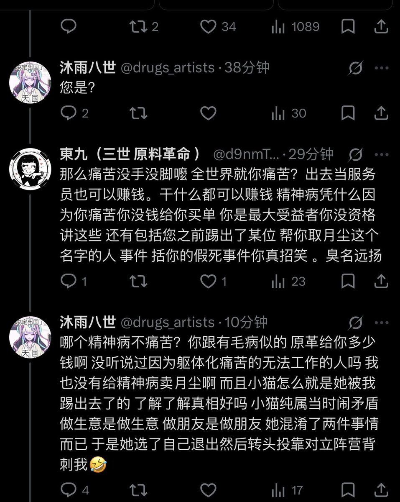

yella Iwase～
@yelai431420
RT @d9nmTTT: @drugs_artists 1. 原料革命为什么叫原料革命 就是因为我们原料便宜 打击黑心倒卖 2.我自己也是精神病患者 但我依旧出去工作 因为我知道没钱的日子很难过 3.同样 你想吃这碗饭 你就做好自己的人品 你的光荣事迹 自己清楚 第四 别一边呐…

東九（三世 原料革命 ）
@d9nmTTT
@drugs_artists 1. 原料革命为什么叫原料革命 就是因为我们原料便宜 打击黑心倒卖 2.我自己也是精神病患者 但我依旧出去工作 因为我知道没钱的日子很难过 3.同样 你想吃这碗饭 你就做好自己的人品 你的光荣事迹 自己清楚 第四 别一边呐喊痛苦 一边妄想一步登天你赚不到你认知之外的钱找个厂上班吧 https://t.co/HgIT20SrOO